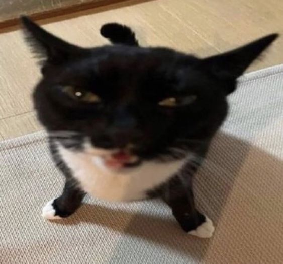
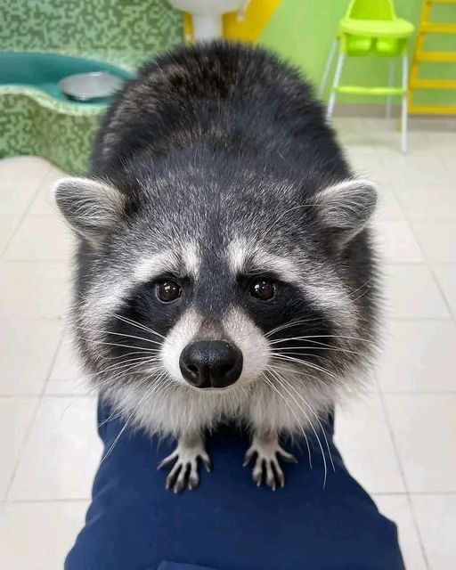
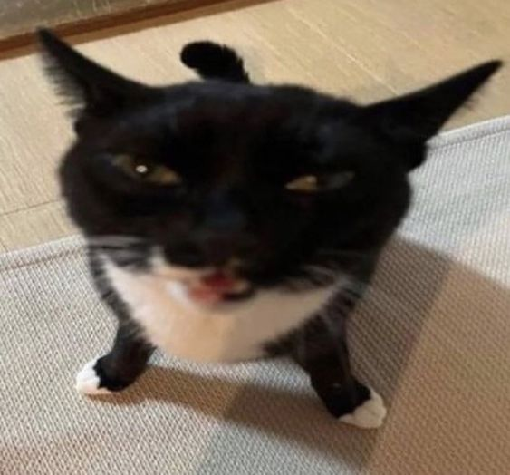
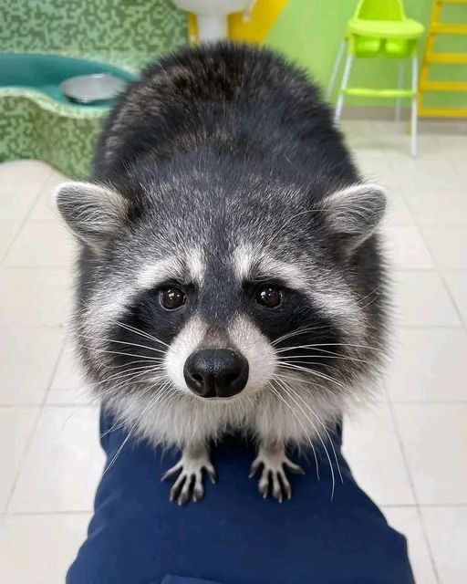

FUN FACT: Os guaxinins têm suas mãozinhas ágeis e habilidosas, que lhes permitem usar objetos com precisão e explorar o ambiente. Além disso, eles exibem um comportamento curioso chamado 'método de lavagem', no qual molham seus alimentos ou brincam com água, até mesmo podendo 'lavar' as mãos antes de comê-los
Imagens raras de um Guaxinim Metalhead fazendo a pose do Nu-Metal com as mãos:
Os guaxinins têm um sistema de comunicação bastante interessante! Eles usam uma variedade de vocalizações, posturas corporais e até mesmo T-POSE para se comunicar
O guaxinim perde seu algodão doce por tentar lava-lo na água.
Outras fotos + (Silly Cats):
 


